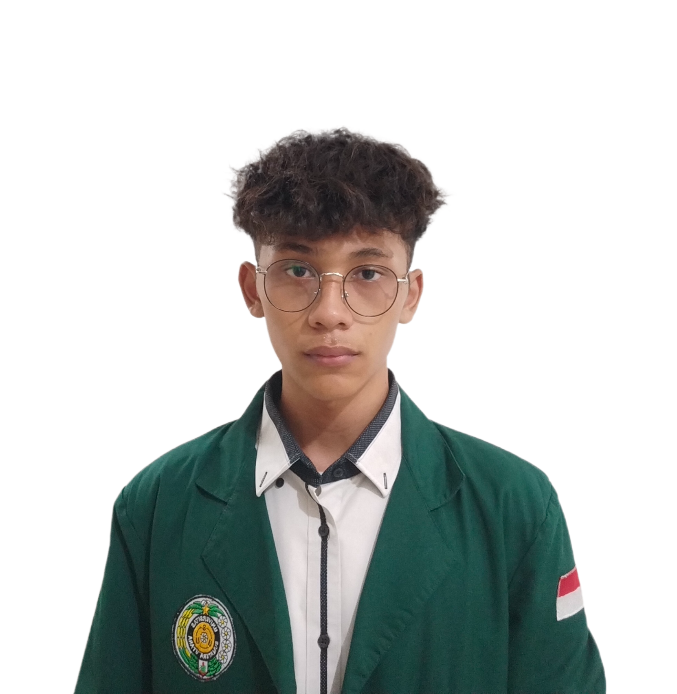
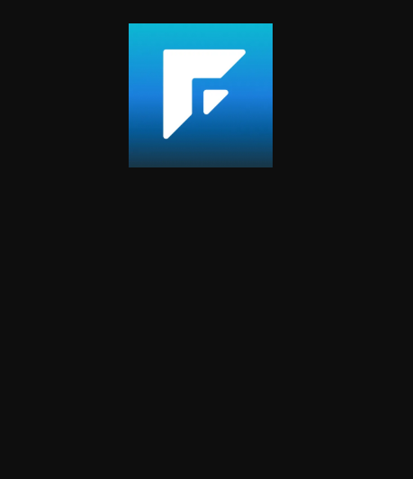

UI/UX Designer & Front-End Developer
Final year IT student at Universitas Sumatera Utara, crafting human centered digital experiences at the intersection of design, code, and interaction.

I'm a finalyear Information Technology student at Universitas Sumatera Utara with a deep passion for Interaction Design and FrontEnd Development. My work lives at the crossroads of technology and human experience building interfaces that are not just functional, but genuinely delightful to use.
As coordinator of the Multimedia & Communication division at the IT Student Association, I lead a team responsible for all visual and digital communication. I believe great technology is invisible, it simply feels right.
Elegant, user-centered interfaces grounded in HCI principles and interaction design theory.
Translating design into responsive, performant, and accessible code with modern web technologies.
Exploring intelligent systems and how machine learning can power smarter, more intuitive products.
Leading creative teams, managing media strategy, and coordinating digital projects.
Himpunan Mahasiswa Teknologi Informasi USU
Badan Eksekutif Mahasiswa Fasilkom-TI USU
Final Year Project · Universitas Sumatera Utara
Universitas Sumatera Utara · GPA: 4.0
SMA Negeri Unggul Subulussalam
AI concepts, prompt engineering, and AI-powered product development.
ML fundamentals, data analysis, and model integration into applications.
Figma, wireframing, prototyping, design systems, and usability testing.
HTML, CSS, JavaScript, React — responsive and accessible web interfaces.
Scripting, data processing, and backend logic for AI/ML projects.
HCI principles, cognitive load reduction, microinteractions, and user flow design.
Team coordination, public speaking, media strategy, and stakeholder management.
Analytical thinking, data structures, algorithms, and creative solution design.
A personal item management app featuring an intuitive dashboard and item list module. Focused on UX optimization with user-friendly interactive forms for efficient item tracking.

in the development of creating a Gamification-based Financial Literacy website which can make it easier for us to manage our finances because there are also Machine Learning and Deep Learning models in creating this application and currently in the process of being created and refined.
Two models successfully achieved a pure test accuracy of 85.67%. The DeepLearning model successfully exported the model into TF-Lite and TFJS formats, making it ready for cross-platform integration (Web & Android) and the Machine Learning model successfully exported in pkl format.
Whether it's an internship opportunity, a freelance project, or just a chat about design and technology — my inbox is always open.
Say Hello ✉️